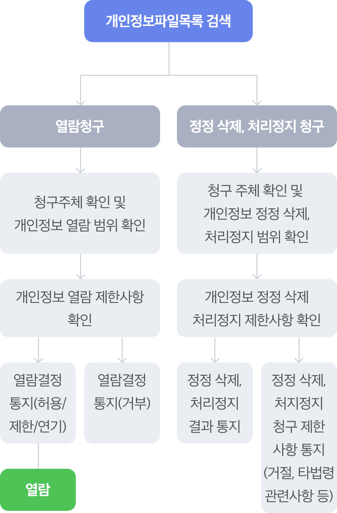

저작권 정책
세종특별자치시는 개인정보보호법 등 관련 법률상의 개인정보보호 규정을 준수하여 정보주체의 보호 및 권익을 보호하고, 개인정보와 관련하여 이용자의 고층을 신속하고 원활하게 처리할 수 있도록 다음과 같은 개인정보 처리방침을 두고 있습니다. 이 방침은 별도의 설명이 없는 한 세종특별자치시에서 처리하는 모든 개인정보파일에 적용됩니다.
-
제1조. 개인정보의 처리목적, 처리 및 보유기간, 처리항목
세종특별자치시가 ｢개인정보보호법｣ 제32조에 따라 등록․공개하는 개인정보파일의 처리목적 및 보유기간, 처리하는 개인정보 항목의 조회 방법은 다음과 같습니다.
개인정보보호종합지원포털(http://www.privacy.go.kr) -> 개인정보민원 -> 개인정보 열람등 요구 -> 개인정보파일 목록 검색 -> 기관명에 “세종특별자치시” 입력 -> 검색
-
제 2조. 개인정보의 제3자 제공
-
1. 세종특별자치시는 다음과 같이 개인정보를 목적 외 이용 및 제3자에게 제공하고 있습니다.
개인정보 목적 외 이용 및 제3자 제공 현황 -
2.세종특별자치시는 정보주체의 개인정보를 수집·이용 목적으로 명시한 범위 내에서 처리하며, 다음 각 호의 경우를 제외하고는 정보주체의 사전 동의 없이는 본래의 목적 범위를 초과하여 처리하거나 제3자에게 제공하지 않습니다.
“정보주체”란 처리되는 정보에 의하여 알아볼 수 있는 사람으로서 그 정보의 주체가 되는 사람을 말한다.
- 정보주체로부터 별도의 동의를 받는 경우
- 법률에 특별한 규정이 있는 경우
- 정보주체 또는 법정대리인이 의사표시를 할 수 없는 상태에 있거나, 주소불명 등으로 사전 동의를 받을 수 없는 경우로서, 명백히 정보주체 또는 제3자의 급박한 생명, 신체, 재산의 이익을 위하여 필요하다고 인정되는 경우
- 통계작성 및 학술연구 등의 목적을 위하여 필요한 경우로서, 특정 개인을 알아 볼 수 없는 형태로 개인정보를 제공하는 경우
- 개인정보를 목적 외의 용도로 이용하거나, 이를 제3자에게 제공하지 아니하면 다른 법률에서 정하는 소관 업무를 수행할 수 없는 경우로서, 보호위원회의 심의·의결을 거친 경우
- 조약, 그 밖의 국제협정의 이행을 위하여 외국정보 또는 국제기구에 제공하기 위하여 필요한 경우
- 범죄의 수사와 공소의 제기 및 유지를 위하여 필요한 경우
- 법원의 재판업무 수행을 위하여 필요한 경우
- 형 및 감호, 보호처분의 집행을 위하여 필요한 경우
-
-
제3조. 개인정보처리의 위탁
-
1. 세종특별자치시는 원활한 개인정보 업무처리를 위하여 다음과 같이 개인정보처리업무를 위탁하고 있습니다.
개인정보처리 위탁업무 현황 2. 세종특별자치시는 위탁계약 체결 시 개인정보보호법 제26조에 따라 위탁업무 수행 목적 외 개인정보의 처리 금지, 개인정보의 관리적·기술적 보호조치, 재 위탁 제한, 수탁자에 대한 관리·감독, 손해배상 등 책임에 관한 사항을 계약서에 명시하고, 수탁자가 개인정보를 안전하게 처리하는지를 감독하고 있습니다.
-
-
제4조. 정보주체의 권리·의무 및 그 행사방법에 관한 사항
-
1. 정보주체(만14세 미만인 경우에는 법정대리인을 말함)는 언제든지 다음 각 호의 개인정보보호 관련 권리를 행사할 수 있습니다.
- 개인정보 열람요구
- 오류 등이 있을 경우 정정 요구
- 삭제요구
- 처리정지 요구
2. 제1항에 따른 권리 행사는 개인정보보호법 시행규칙 [별지 제8호 서식]에 따라 작성 후 서면, 전자우편, 모사전송(FAX) 등을 통하여 세종특별자치시(해당부서)로 요구하실 수 있으며, 세종특별자치시에서는 10일 이내에 조치를 통지하겠습니다.
3. 정보주체가 개인정보의 오류 등에 대한 정정 또는 삭제를 요구한 경우에는 정정 또는 삭제를 완료할 때까지 당해 개인정보를 이용하거나 제공하지 않습니다.
4. 제1항에 따른 권리 행사는 정보주체의 법정대리인이나 위임을 받은 자 등 대리인을 통하여 하실 수 있습니다. 이 경우 개인정보보호법 시행규칙 [별지 제11호 서식]에 따른 위임장을 제출하셔야 합니다.
5. 개인정보 열람 및 처리정지 요구는 개인정보보호법 제35조 제5항, 제37조 제2항에 의하여 정보주체의 권리가 제한 될 수 있습니다.
6. 개인정보의 정정 및 삭제 요구는 다른 법령에서 그 개인정보가 수집 대상으로 명시되어 있는 경우에는 그 삭제를 요구할 수 없습니다.
7. 정보주체 권리에 따른 열람의 요구, 정정·삭제의 요구, 처리정지의 요구 시 열람 등 요구를 한 자가 본인이거나 정당한 대리인인지를 확인합니다.
-
8. 개인정보 열람, 정정·삭제, 처리정지 청구는 아래와 같은 절차로 처리됩니다.
 -
9. 개인정보 열람 등 요구방법
개인정보보호 종합지원 포털(www.privacy.go.kr)을 통해 “온라인 신청” 또는 세종특별자치시(해당부서)를 통해 “오프라인 신청”하실 수 있습니다. 10. 정보주체 권리 행사에 대해 거절 등의 조치에 불복이 있는 경우에는 거절 등의 통지서를 받은 날로부터 30일 이내에 이의신청을 할 수 있으며, 통지서 내의 이의제기방법에 따라 제출하여야 합니다.
-
-
제5조. 개인정보의 파기
세종특별자치시는 원칙적으로 개인정보의 보유기간이 경과했거나 처리목적이 달성된 경우에는 지체 없이 해당 개인정보를 파기합니다. 다만, 다른 법령에 따라 보존하여야 하는 경우에는 그러하지 않을 수 있습니다. 파기의 절차, 기한 및 방법은 다음과 같습니다.
1. 파기절차 : 보유기간이 경과했거나 처리목적이 달성된 후 내부방침 및 관련 법령에 따라 파기합니다.
2. 파기기한 : 개인정보의 보유기간이 경과된 경우 보유기간의 종료일로부터 5일 이내에, 개인정보의 처리 목적 달성 등 그 개인정보가 불필요하게 되었을 때에는 개인정보의 처리가 불필요한 것으로 인정되는 날로부터 5일 이내에 그 개인정보를 파기합니다.
-
3. 파기방법 : 세종특별자치시에서 처리하는 개인정보를 파기할 때에는 다음의 방법으로 파기합니다.
- 전자적 파일 형태인 경우 : 복원이 불가능한 방법으로 영구 삭제
- 전자적 파일의 형태 외의 기록물, 인쇄물, 서면, 그 밖의 기록매체인 경우 : 파쇄 또는 소각
-
제6조. 개인정보의 안전성 확보조치
세종특별자치시는 개인정보의 안전성 확보를 위해 다음과 같은 조치를 취하고 있습니다.
-
1. 개인정보 취급자의 최소화 및 교육
개인정보 취급자는 필요한 인원에 한하여 지정·관리하고 있으며, 취급자를 대상으로 안전한 관리를 위한 교육을 실시하고 있습니다. -
2. 개인정보에 대한 접근 제한
개인정보를 처리하는 개인정보처리시스템에 대한 접근통제를 위한 필요한 조치를 하고 있으며, 침입차단시스템을 이용하여 외부로부터의 무단접근을 통제하고 있습니다. -
3. 접속기록의 보관
개인정보를 처리하는 개인정보처리시스템에 접속한 기록을 최소 6개월 이상 보관·관리하고 있습니다. -
4. 개인정보의 암호화
개인정보는 암호화 등을 통해 안전하게 저장 및 관리되고 있습니다. 또한 중요한 데이터는 저장 및 전송 시 암호화하여 사용하는 등의 별도 보안기능을 사용하고 있습니다. -
5. 보안장비 설치 및 주기적 점검·갱신
해킹이나 컴퓨터 바이러스 등에 의한 개인정보 유출 및 훼손을 막기 위하여 보안장비를 설치하고 주기적으로 갱신·점검하고 있습니다. -
6. 비인가자에 대한 출입 통제
개인정보를 보관하고 있는 개인정보처리시스템의 물리적 보관 장소를 별도로 두고 이에 대해 출입통제 절차를 수립·운영하고 있습니다.
-
-
제7조. 개인정보 자동 수집 장치의 설치·운영 및 거부에 관한 사항
1. 세종특별자치시는 이용자에게 개별적인 맞춤서비스를 제공하기 위해 이용정보를 저장하고 수시로 불러오는 ‘쿠기(cookie)’를 사용합니다.
-
2. 쿠키는 웹사이트를 운영하는데 이용되는 서버(http)가 이용자의 컴퓨터 브라우저에게 보내는 소량의 정보이며, 이용자 컴퓨터(PC)의 하드디스크에 저장되기도 합니다.
- (쿠키의 사용목적) 이용자가 방문한 각 서비스와 웹사이트들에 대한 방문 및 이용형태, 인기검색어, 보안접속 여부 등을 파악하여 이용자에게 최적화된 정보를 제공하기 위해 사용됩니다.
- (쿠키의 설치∙운영 및 거부) 이용하는 컴퓨터(PC)의 웹 브라우저 상단에 도구>인터넷 옵션>개인정보 메뉴의 옵션 설정을 통해 쿠키 저장을 거부할 수 있습니다.
- 쿠키 저장을 거부할 경우 맞춤형서비스 이용에 어려움이 발생할 수 있습니다.
-
제8조. 권익침해 구제방법
-
1. 정보주체는 세종특별자치시 자체적인 개인정보 불만처리, 피해구제 결과에 만족하지 못하거나, 보다 자세한 도움이 필요할 경우, 아래의 기관에 대해 개인 정보 침해에 대한 피해구제, 상담 등을 문의하실 수 있습니다.
- 개인정보 침해신고센터(한국인터넷진흥원 운영) : (국번없이) 118 (privacy.kisa.or.kr)
- 개인정보 분쟁조정위원회(국번없이) : 1833-6972 (www.kopico.go.kr)
- 대검찰청 사이버범죄수사단 : 02-3480-3573 (www.spo.go.kr)
- 경찰청 사이버안전국 : (국번없이) 182 (cyberbureau.police.go.kr)
-
2. 또한, 개인정보의 열람, 정정·삭제, 처리정지 등에 대한 정보주체자의 요구에 대하여 공공기관의 장이 행한 처분 또는 부작위로 인하여 권리 또는 이익을 침해 받은 자는 행정심판법이 정하는 바에 따라 행정심판을 청구할 수 있습니다.
- 중앙행정심판위원회: (국번없이) 110 (www.simpan.go.kr)
-
-
제9조. 개인정보보호책임자
세종특별자치시는 개인정보 처리에 관한 업무를 총괄해서 책임지고, 개인정보 처리와 관련한 정보주체의 불만처리 및 피해구제 등을 위하여 아래와 같이 개인정보보호책임자를 지정하고 있습니다.
-
1. 개인정보보호책임자
- 성명 : 이용석
- 직책 : 기획조정실장
- 직급 : 고위공무원
- 연락처 : 044-300-2100
-
2. 개인정보 보호 담당부서
- 부서명 : 정보통계담당관
- 담당자 : 안윤기
- 연락처 : 044-300-2445
- 메 일 : ahn6258@korea.kr
- 팩 스 : 044-300-2439
-
-
제10조. 개인정보 처리방침 변경
이 개인정보 처리방침은 2019. 2. 15.부터 적용됩니다.
이전의 개인정보 처리방침은 아래에서 확인하실 수 있습니다.
- 2012. 7. 1 ~ 2014. 1.31.적용지침
- 2014. 2. 1 ~ 2014.11.17.적용지침
- 2014.11.18 ~ 2015. 2.10.적용지침
- 2015. 2.11 ~ 2016. 2.21.적용지침
- 2016. 2.22 ~ 2017. 2.21.적용지침
- 2017. 2.22 ~ 2017. 4.12.적용지침
- 2017. 4.13 ~ 2017. 7.26.적용지침
- 2017. 7.27 ~ 2018. 1.28.적용지침
- 2018. 1.29 ~ 2018. 5.30.적용지침
- 2018. 5.31 ~ 2018. 8.26.적용지침
- 2018. 8.27 ~ 2018. 12.31.적용지침
- 2019. 1. 0 ~ 2019. 2.14.적용지침